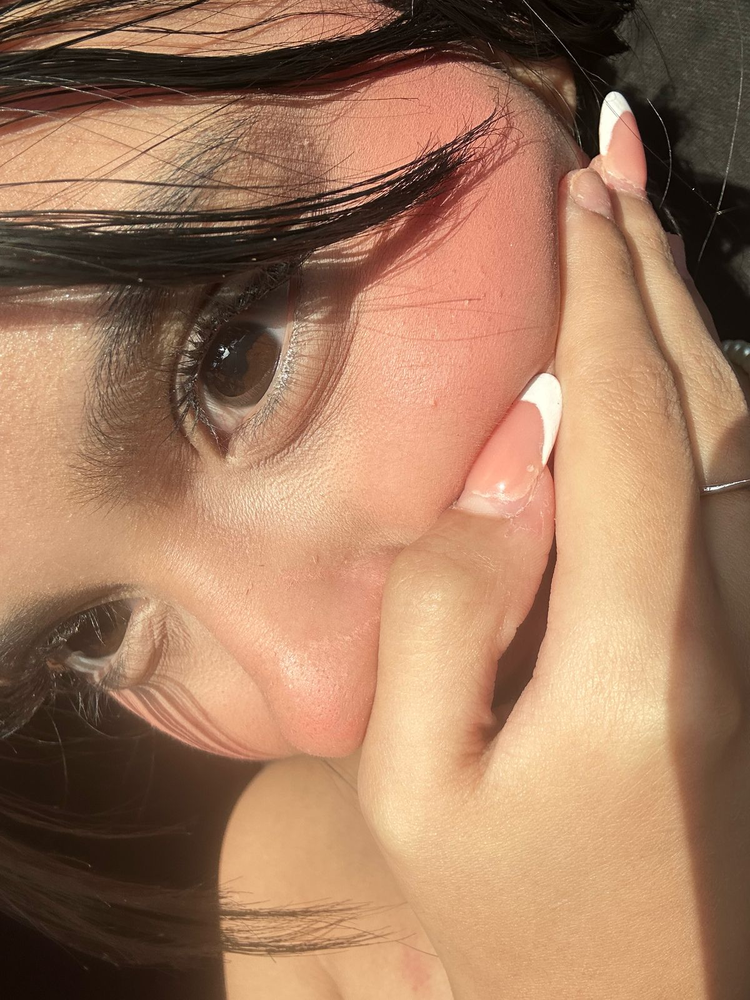
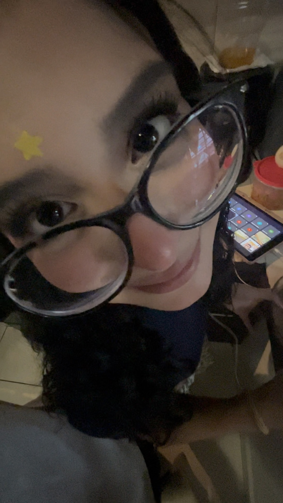
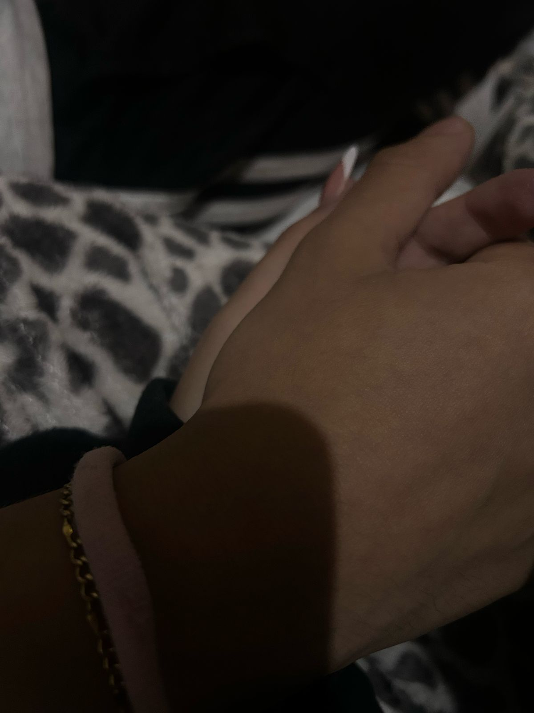
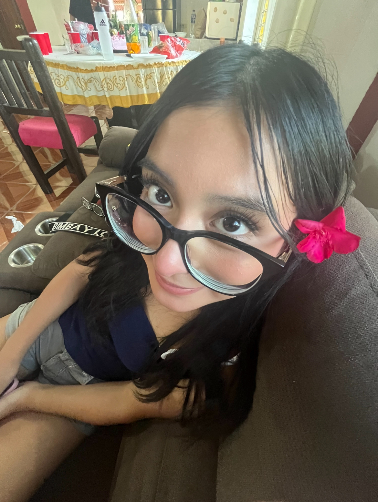
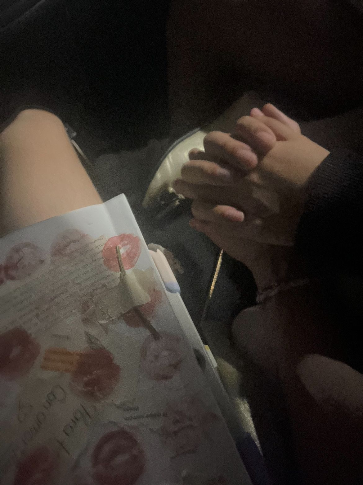

Hablamos por primera vez en agosto, a lo mejor esto ella no lo sabe; o sí, pero yo le pedí a una chica que la conocía que me presentara a alguna chica. Recuerdo que me mostró a varias y yo le dije que ninguna me gustaba, hasta que me mostró a ti (Annie, mi niña linda). Quedé completamente fascinado con tu belleza.
Yo sé que te lo he dicho muchas veces, pero en verdad: ERES LA MUJER MÁS HERMOSA DEL UNIVERSO.
El verdadero comienzo
La verdad es que nuestra historia empezó de una forma medio rara. Los dos planeábamos hacernos daño de cierta forma y dejarnos, pero la primera vez que nos vimos fue tan lindo y orgánico. Lo único que hicimos fue ayudar en su casa y pasear a su hermano Mateo.
A pesar de que no hicimos mucho, cada momento con ella fue mágico. Supe que me gustaba de verdad porque cuando hacíamos contacto visual sentía cosas inexplicables. Sus ojos marrones grandes y con ese brillo tan particular me hipnotizaron.
Seguimos hablando y volvimos a vernos. Intentamos hacer brownies y ahí fue cuando le tomé esta foto:
Ella odia este tipo de fotos, pero a mí me encantan. También ahí fue cuando ella tomó esta foto en la que tengo su liga de pelo:
Después no nos vimos por un tiempo, ya que ambos estuvimos de vacaciones. Pero llegó un domingo en el cual la acompañé a una comida familiar.
Ella me hizo la pregunta: “¿Qué somos?” Yo solo le dije: “Quiero que seas mi novia, mi mujer, mi todo.” Y ella me dijo: “Eres de palabras, pero no de acciones.” Así que salí al jardín, corté una flor, me arrodillé y le pedí que fuera mi novia.
Me convertí en el hombre más afortunado del mundo. También me dio una carta:
Este es Mateo, el hermano más apuesto, inteligente y dulce. El mejor niño que he conocido
Mi niña pequeña, me encanta su sonrisa y todo lo que transmite
La flor que le di cuando le pedí que fuera mi novia. Un momento que siempre recordaré.